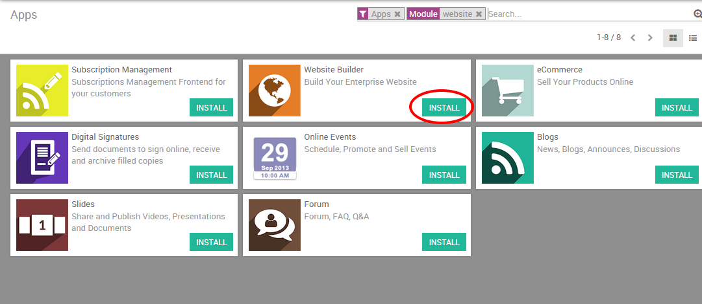
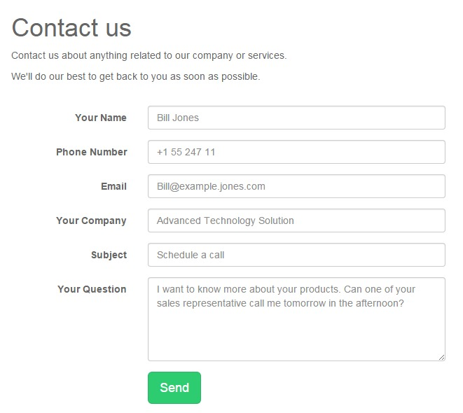

Ваш веб-сайт должен быть главным инструментом генерации лидов. Сайт - центр всех маркетинговых кампаний в Интернете. и Вам необходимо управлять трафиком на сайт для работы вашей воронки продаж. Когда на ваш сайт заходит посетитель, ваша цель - получит его контактную информацию, чтобы иметь возможность оставаться с ним на связи и "подталкивать" его дальше по воронке продаж.
Вот как обычно происходит сбор контактной информации посетителя:
Ваш посетитель сайта нажимает элемент страницы с призывом к действию (Call to action) одного из ваших маркетинговых материалов (например, письмо рассылки, сообщение в социальных сетях или публикация в блоге)
Клик приводит вашего посетителя на целевую страницу, на которой находится форма для сбора его личной информации (например, его имя, адрес электронной почты, номер телефона)
Посетитель заполняет форму, что автоматически создает Лида в Odoo CRM
Совет
Ваши элементы интерфейса с призывами к действию, целевые страницы и формы являются ключевыми элементами процесса генерации Лидов. С помощью веб-сайта Odoo вы можете легко создавать и оптимизировать эти критические элементы без знаний программирования или использования сторонних приложений. Подробнее здесь.
В Odoo модули веб-сайта и CRM полностью интегрированы, что означает, что вы можете легко генерировать Лидов различными способами через свой веб-сайт. Тем не менее, даже если вы размещаете свой сайт на другой CMS, все еще можно регистрировать Лидов в Odoo CRM, созданными на вашем веб-сайте.
Активация этапа лидов
По умолчанию начальный этап (этап Лидов) не активируется в Odoo CRM. Поэтому новые обращения автоматически становятся возможностями. Вы можете активировать опцию добавления начального шага. Если вы хотите импортировать свои контакты в качестве потенциальных клиентов (Лидов), а не в возможности, из модуля Sales перейдите к , выберите опцию use leads if…, как показано ниже, и нажмите кнопку Применить.

Обратите внимание, что без включения данной опции созданные лиды сразу становятся возможностями.
Лиды с сайта на Odoo
Предположим, что вы хотите получить как можно больше информации о посетителях вашего сайта. Обычно человек, который хочет узнать больше о продуктах и услугах вашей компании готов оставить свою контактную информацию. Благодаря интеграции между модулями CRM и веб-сайта, вы можете легко автоматизировать процесс получения Лида благодаря модулям contact form и form builder
Примечание
Одним из способов создания Лидов с вашего веб-сайта является сбор адресов электронной почты посетителей с помощью формы подписки на рассылку новостей. Эти модули создадут новые контакты в списке рассылки вашего электронного маркетинга. Подробнее об этом читайте здесь.
Настройка
Начните с установки модуля Website builder. На главной панели выберите Apps, введите "Website" в строке поиска и нажмите Install. После этого Вы будете автоматически перенаправлены в веб-интерфейс.
Совет
если вы впервые используете сайт Odoo, то на экране появиться всплывающее окно учебника. Он поможет вам начать работу с инструментом. Рекомендуем его использовать.
Создайте Лида, используя модуль контактной формы (Contact Form)
Вы можете легко создать Лидов через контактную форму на странице Связаться с нами. Для этого вам сначала нужно установить модуль Contact Form. Он добавит контактную форму на страницу Связаться с нами и автоматически сгенерирует отправку данных из формы.
Чтобы установить его, вернитесь в панель администрирования, используя квадратную икону в верхнем левом углу экрана. Затем нажмите на Apps, введите "Contact Form" в строке поиска (не забудьте удалить тег Apps, иначе модуль не отобразиться в списке) и нажмите Install.

После того, как модуль будет установлен, контактная форма будет интегрирована на вашу страницу «Свяжитесь с нами». Эта форма связана с Odoo CRM, что означает, что все данные, введенные через форму, будут зафиксированы CRM и создадут нового Лида.
Каждый Лид, созданный с помощью контактной формы, доступен в модуле «Продажи», нажав на . Имя Лида соответствует полю «Тема» в контактной форме, а вся другая информация хранится в соответствующих полях в CRM. Как продавец вы можете добавить дополнительную информацию, преобразовать Лида в возможность или пометить его как «Выиграна» или «Проиграна».

Создайте Лида, используя модуль конструктора форм
Вы можете создавать полностью редактируемые пользовательские формы на любой целевой странице вашего сайта с помощью конструктора форм. Что касается модуля Contact Form, Form Builder автоматически сгенерирует Лида после того, как посетитель заполнит форму и нажмет кнопку Отправить.
В бекэнде перейдите в раздел «Настройки» и установите модуль Website Form Builder (не забудьте удалить тег Apps (приложения), чтобы модуль отобразился в списке модулей). Затем вернитесь на веб-сайт и перейдите на нужную целевую страницу и нажмите «Изменить», чтобы получить доступ к доступным фрагментам. Фрагмент Form Builder находится в разделе Feature.

Как только вы перенесете фрагмент туда, где вы хотите создать форму на странице, появится окно Form Parameters. В раскрывающемся списке Action выберите Create a lead, чтобы автоматически создать Лида в CRM системе Odoo. В поле Thank You выберите URL страницы, на которую вы хотите перенаправить посетителя после отправки формы (если вы не укажете URL-адрес, при удачной отправке отобразится сообщение «Форма отправлена успешно» ).
Затем вы можете начать изменять свою форму. Чтобы добавить новые поля, нажмите Выберите контейнерный блок, а затем на синей кнопке Настроить. Появятся 3 варианта:

Изменить параметры формы: позволяет вернуться к параметрам формы и изменить настройки
Добавить поле модели: позволяет добавить поле, уже существующее в Odoo CRM из выпадающего списка. Например, если вы выберете поле Страна, значение, введенное в строке, появится в поле Страна в CRM - даже если вы измените имя поля в форме.
Добавить настраиваемое поле: позволяет добавлять дополнительные поля, которые по умолчанию не существуют в CRM-системе Odoo. Введенные значения будут добавлены в «Заметки» в CRM. Вы можете создать любой тип поля: флажок, переключатель, текст, десятичное число и т.д.
Любая заявленная форма создаст Лида.
Из другой CMS
Если вы используете Odoo CRM без модуля веб-сайта Odoo, вы все равно можете автоматизировать процесс создания Лида с сайта с помощью почтовых шлюзов, отредактировав кнопку «Отправить» любой формы и заменив гиперссылку на mailto, соответствующую имени ящика электронной почты вашей группы продаж (узнайте здесь, как создать свой ящик электронной почты группы продаж ).
Например, если псевдоним вашей компании - salesEMEA@mycompany.com, добавьте mailto:salesEMEA@mycompany.com в обычный код гиперссылки (CTRL + K), чтобы Лиды генерировались в соответствующей группе продаж в Odoo CRM.